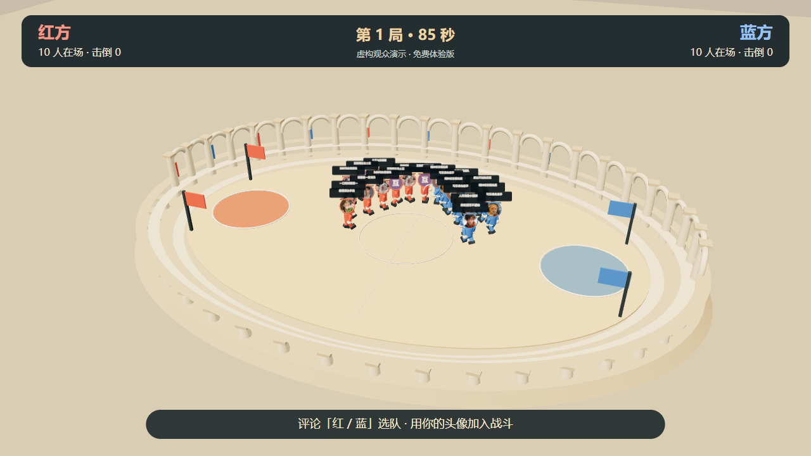

头像角斗场 / 免费开源体验版 v0.1.0
你的头像，就是角斗场里的小人。
观众评论选择红蓝阵营，头像直接成为小人的头部，网名显示在头顶。红蓝双方从两端入场，在沙地角斗场中自动靠近、挥拳、击退、倒地。

先免费体验，再选择进阶玩法
| 功能 | 免费体验版 | 满血版本 |
|---|---|---|
| 直播连接 / 评论选队 / 头像小人 | 包含 | 包含 |
| 3D 角斗场 / 徒手打斗 / 90 秒回合 | 包含 | 包含 |
| 小心心 3 人 / 墨镜 10 人 | 固定规则 | 可配置 |
| 横竖屏画面 / 本地模拟互动 / 语音 | 包含 | 包含 |
| 冷兵器 / 自定义礼物与装备 | 未包含 | 包含 |
| 个人积分 / 胜场排名 / 段位 | 未包含 | 包含 |
| 榜单保存 / 导出备份 | 未包含 | 包含 |
当局阵营击倒数与胜负展示属于免费功能；跨局个人积分与段位属于完整版功能。
观众如何加入
- 评论「红」或「蓝」选队；没有选择的新观众按人数自动平衡。
- 小心心产生 3 个本人分身；墨镜产生 10 个；其他礼物 1 个，全部徒手。
- 每局 90 秒，击倒更多的阵营获胜，平局双方无胜负；7 秒后自动下一局。
- 每队最多同时 60 人，总待入场上限 2000，超限有提示。
直播连接代码已包含，但不等于已取得平台授权或已验证所有账号可用。平台页面、礼物名称、登录状态和网络变化都可能影响读取；使用前请实播验证。
作者：大雨 · 微信：Mc9988889999
基于志哥AI的 3d-printer-live 派生，公开源码采用 MIT 许可证。不是抖音官方产品。